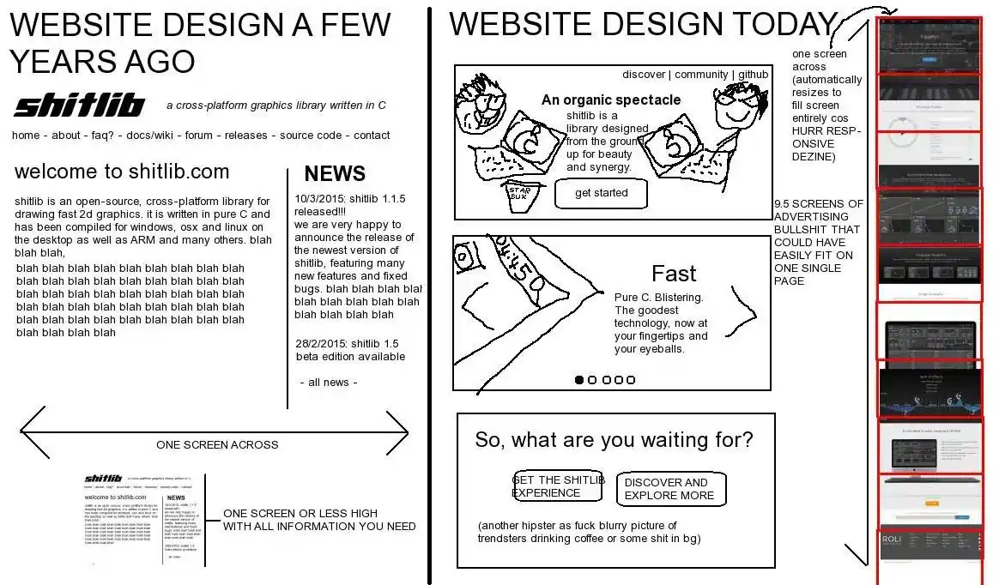
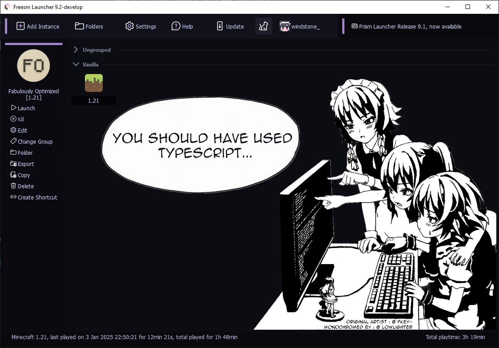

<!doctype html><html lang=en><meta charset=utf-8><meta name=viewport content="width=device-width,initial-scale=1"><meta name=description content="A portfolio website written in pure html and minified to just ~10 KBs of code"><link rel=stylesheet href=./mi.css><link rel=icon type=image/x-icon href=./assets/favicon.ico><title>Portfolio @notwindstone</title><meta property=og:url content=https://notwindstone.github.io/ ><meta property=og:type content=website><meta property=og:title content="Portfolio @notwindstone"><meta property=og:description content="A portfolio website written in pure html and minified to just ~10 KBs of code"><meta property=og:image content=./assets/frieren.webp><meta name=twitter:card content=summary_large_image><meta property=twitter:domain content=notwindstone.github.io><meta property=twitter:url content=https://notwindstone.github.io/ ><meta name=twitter:title content="Portfolio @notwindstone"><meta name=twitter:description content="A portfolio website written in pure html and minified to just ~10 KBs of code"><meta name=twitter:image content=./assets/frieren.webp><header style=margin:0><h1 style=margin:0><a href=#>notwindstone</a></h1><nav style=display:flex;gap:8px;font-size:.8em;user-select:none><a style=text-decoration:underline href=# onclick='routePush("?page=home")'>Home </a>- <a style=text-decoration:underline href=# onclick='routePush("?page=projects")'>Projects </a>- <a style=text-decoration:underline href=# onclick='routePush("?page=contact")'>Contact </a>- <a style=text-decoration:underline href=# onclick=changeTheme()>✨ Change Theme</a></nav></header><hr><div id=root></div><script>function routePush(e){window.history.replaceState(null,null,e),loadPage(e)}function loadPage(e){switch(e){case"?page=home":default:root.innerHTML=pages.home;break;case"?page=projects":root.innerHTML=pages.projects;break;case"?page=contact":root.innerHTML=pages.contact}}function changeTheme(){var e=document.documentElement.getAttribute("data-theme")||"dark";document.documentElement.setAttribute("data-theme",{dark:"light",light:"dark"}[e])}var root=document.getElementById("root"),homePage='\n<main>\n\n<blockquote>Inspired by this shitpost (I don\'t have the source) and made using <a href="https://github.com/FelipeIzolan/mi.css">mi.css</a></blockquote>\n</main>\n<article>\n<h2>Content</h2>\n<ul>\n<li>\n<a href="#text__about-me">About me</a>\n</li>\n<li>\n<a href="#text__my-skills">My skills</a>\n</li>\n</ul>\n</article>\n<article>\n<h2 id="text__about-me">About me</h2>\n<p>\nHello! I\'m an 18 year old <span style="color:var(--accent-color)">fullstack typescript developer</span> who is especially interested in the <span style="color:var(--accent-color)">frontend</span> part.\n</p>\n</article>\n<article>\n<h2 id="text__my-skills">My skills</h2>\n<h3>I\'m currently learning</h3>\n<ul>\n<li>typescript</li>\n<li>go</li>\n<li><a href="https://nextjs.org/" target="_blank">next.js</a><span>(typescript, fullstack framework)</span>\n</li>\n<li><a href="https://elysiajs.com/" target="_blank">elysia.js</a><span>(typescript, backend framework)</span></li>\n<li><a href="https://wails.io/" target="_blank">wails.js</a><span>(typescript & go, framework for desktop applications)</span></li>\n</ul>\n<h3>I have the most experience in</h3>\n<ul>\n<li><a href="https://nextjs.org/" target="_blank">next.js</a><span>(typescript, fullstack framework)</span></li>\n<li><a href="https://tailwindcss.com/" target="_blank">tailwindcss</a><span>(css framework)</span></li>\n<li><a href="https://tanstack.com/query/latest" target="_blank">tanstack query</a><span>(async state manager mainly used for fetching)</span></li>\n<li><a href="https://orm.drizzle.team/" target="_blank">drizzle orm</a><span>(typesafe sql query builder)</span></li>\n</ul>\n<h3>Things I have tried</h3>\n<ul>\n<li>dart</li>\n<li>kotlin</li>\n<li>java</li>\n<li><a href="https://nuxt.com/" target="_blank">nuxt</a><span>(typescript, fullstack framework)</span></li>\n<li><a href="https://unocss.dev/" target="_blank">unocss</a><span>(css framework)</span></li>\n<li><a href="https://mantine.dev/" target="_blank">mantine ui</a><span>(typescript, ui kit)</span></li>\n<li><a href="https://v2.tauri.app/" target="_blank">tauri</a><span>(typescript & rust, framework for cross-platform applications)</span></li>\n<li><a href="https://developer.android.com/compose" target="_blank">jetpack compose</a><span>(kotlin, android\'s toolkit)</span></li>\n<li><a href="https://flutter.dev/" target="_blank">flutter</a><span>(dart, framework for cross-platform applications)</span></li>\n</ul>\n</article>\n        ',projectsPage='\n<h2>My projects</h2>\n<article>\n<h3>Zen Auth <span style="opacity:50%">- Feb 15, 2025</span></h3>\n<p>\nComprehensive authentication system for next.js.\n</p>\n<blockquote>\ntech stack: next.js, typescript, tailwindcss, drizzle orm, tanstack query, oslojs, arctic, redis, postgresql, tanstack virtual\n</blockquote>\n<p>Website: <a href="https://zen-auth.vercel.app/" target="_blank">zen-auth.vercel.app</a></p>\n<p>Source: <a href="https://github.com/notwindstone/zen-auth" target="_blank">github.com/notwindstone/zen-auth</a></p>\n<a href="https://zen-auth.vercel.app/" target="_blank">\n\n</a>\n</article>\n<article>\n<h3>Freesm Launcher website <span style="opacity:50%">- Dec 30, 2024</span></h3>\n<p>\nInteractive website for a minecraft launcher.\n</p>\n<blockquote>\ntech stack: next.js, typescript, tailwindcss, tanstack query, oslojs, zustand, next-intl, mantine hooks\n</blockquote>\n<p>Website: <a href="https://website-freesmlauncher.vercel.app/" target="_blank">website-freesmlauncher.vercel.app</a></p>\n<p>Source: <a href="https://github.com/notwindstone/website-freesmlauncher" target="_blank">github.com/notwindstone/website-freesmlauncher</a></p>\n<a href="https://website-freesmlauncher.vercel.app/" target="_blank">\n\n</a>\n</article>\n<article>\n<h3>...between these two projects lay many other unfinished ones...</h3>\n</article>\n<article>\n<h3>Anisun <span style="opacity:50%">- Mar 17, 2024</span></h3>\n<p>\nAnime streaming website with accounts and comments.\n</p>\n<blockquote>\ntech stack: next.js, typescript, mantine ui, drizzle orm, tanstack query, postgresql, next-intl, mantine hooks, embla carousel, dayjs, vidstack, kodikwrapper, serwist, clerk, tanstack virtual\n</blockquote>\n<blockquote>\nnote: this is my second programming project, which is currently the largest (due to my weak knowledge it has many flaws)\n</blockquote>\n<p>Website: <a href="https://anisun.vercel.app/" target="_blank">anisun.vercel.app</a></p>\n<p>Source: <a href="https://github.com/notwindstone/anisun" target="_blank">github.com/notwindstone/anisun</a></p>\n<a href="https://anisun.vercel.app/" target="_blank">\n\n</a>\n</article>\n<article>\n<h3>Keyboard wiki <span style="opacity:50%">- Mar 8, 2024</span></h3>\n<p>\nKeyboard wiki website.\n</p>\n<blockquote>\ntech stack: vite, react, typescript, mantine ui, tanstack router, mdx\n</blockquote>\n<blockquote>\nnote: this is my first huge programming project\n</blockquote>\n<p>Website: <a href="https://keyboard-wiki.vercel.app/" target="_blank">keyboard-wiki.vercel.app</a></p>\n<p>Source: <a href="https://github.com/notwindstone/keyboard-wiki" target="_blank">github.com/notwindstone/keyboard-wiki</a></p>\n<a href="https://keyboard-wiki.vercel.app/" target="_blank">\n\n</a>\n</article>\n<hr>\n<h2>Maintaining these</h2>\n<article>\n<h3>Freesm Launcher <span style="opacity:50%">- Jul 10, 2024</span></h3>\n<p>\nCustomized Prism Launcher fork aimed to provide a free way to play Minecraft.\n</p>\n<blockquote>\ntech stack: qt, c++\n</blockquote>\n<p>Downloads: <a href="https://website-freesmlauncher.vercel.app/en/downloads" target="_blank">website-freesmlauncher.vercel.app/en/downloads</a></p>\n<p>Source: <a href="https://github.com/FreesmTeam/FreesmLauncher" target="_blank">github.com/FreesmTeam/FreesmLauncher</a></p>\n<a href="https://website-freesmlauncher.vercel.app/en/downloads" target="_blank">\n\n</a>\n</article>\n        ',contactPage='\n<article>\n<p>My github account: <a href="https://github.com/notwindstone/" target="_blank">github.com/notwindstone</a></p>\n<p>My telegram account: <a href="https://t.me/windst1/" target="_blank">t.me/windst1</a></p>\n</article>\n        ',pages={home:homePage,projects:projectsPage,contact:contactPage},currentPage=window.location.search;loadPage(currentPage)</script>
